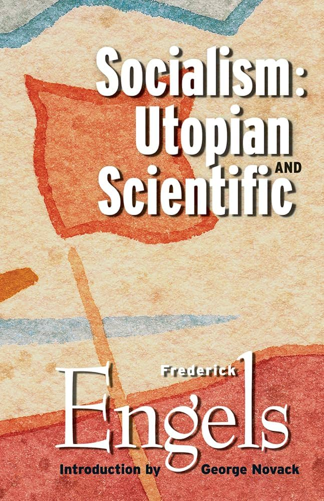

Faz 1: Felsefe, Ekonomi Politik ve Edebi Yansıma

The ABC of Socialism
Türkçe Adı: Sosyalizmin AlfabesiNeden Burada? Marksist ekonomi politiğin dünyadaki en anlaşılır giriş kitabıdır. Kavramları okur için netleştirir.

Socialism: Utopian and Scientific
Türkçe Adı: Ütopik Sosyalizm ve Bilimsel SosyalizmNeden Burada? Sosyalizmin iyi niyetli hayallerden çıkıp felsefi ve ekonomik bir bilime nasıl dönüştüğünü anlatır.

Reason and Revolution
Türkçe Adı: Akıl ve DevrimNeden Burada? Hegel'in karmaşık diyalektiğinin, Marx'ın devrimci toplumsal teorisine nasıl zemin hazırladığını anlatan köprü metindir.

The Wealth of Nations (Books I-III)
Türkçe Adı: Ulusların Zenginliği (1. Cilt)Neden Burada? Kapitalizmin ve işbölümünün temel metni. Marx'ın itiraz edeceği ekonomik sistemi kuran kısımdır.

The Wealth of Nations (Books IV-V)
Türkçe Adı: Ulusların Zenginliği (2. ve 3. Cilt)Neden Burada? Devletin ekonomideki rolünü ve sömürgecilik eleştirisini ekler. Referans olarak kütüphanede bulunmalıdır.

Caliban and the Witch
Türkçe Adı: Caliban ve CadıNeden Burada? Kapitalizmin ilk aşamasında kadın emeğine nasıl el konulduğunu anlatarak yeniden üretim perspektifini tamamlar.

Wage Labour and Capital
Türkçe Adı: Ücretli Emek ve SermayeNeden Burada? Marx'ın, sömürü kavramının ekonomik temelini Kapital okumadan anlatma biçimidir.

Capital (Volume 1)
Türkçe Adı: Kapital (1. Cilt)Neden Burada? Kapitalist üretim tarzının, artı-değer sömürüsünün ve sistemin içsel çelişkilerinin anatomisini çıkaran, ekonomi-politik zirvesidir.

Germinal
Türkçe Adı: GerminalNeden Burada? Sömürü kavramının edebiyattaki en büyük karşılığı. Maden işçilerinin sefaletini ve direnişini hissettirir.

The Communist Manifesto
Türkçe Adı: Komünist ManifestoNeden Burada? Sınıf mücadelesinin ve komünist hedeflerin siyasi deklarasyonu.

Imperialism
Türkçe Adı: Emperyalizm, Kapitalizmin En Yüksek AşamasıNeden Burada? Serbest rekabetin dev tekellere dönüştüğünü gösterir. I. Dünya Savaşı'nın Marksist açıklamasıdır.

The Iron Heel
Türkçe Adı: Demir ÖkçeNeden Burada? Tekelci kapitalizmin siyasi olarak faşist bir oligarşiye dönüşmesini öngören distopik kurgudur.
Faz 2: Devrim ve Devletin Dönüşümü
Reform or Revolution
Türkçe Adı: Reform mu, Devrim mi?Neden Burada? Kapitalizmin reformlarla düzeltilebileceğini savunanlara yazılmış sarsıcı bir reddiyedir. İşçi sınıfının kendiliğinden eylemini savunur.

The State and Revolution
Türkçe Adı: Devlet ve DevrimNeden Burada? Burjuva devletin neden parçalanıp yerine ne konması gerektiğini ve devletin sönümlenmesini tartışır.

On Practice and Contradiction
Türkçe Adı: Pratik ve Çelişki ÜzerineNeden Burada? Marksizm-Leninizm'in Batı'dan çıkıp köylü toplumuna nasıl uyarlandığını gösteren felsefi temeldir.

The Wretched of the Earth
Türkçe Adı: Yeryüzünün LanetlileriNeden Burada? Sömürgeciliğe karşı şiddetin neden zorunlu ve özgürleştirici olduğunu anlatır. Üçüncü Dünya devrim